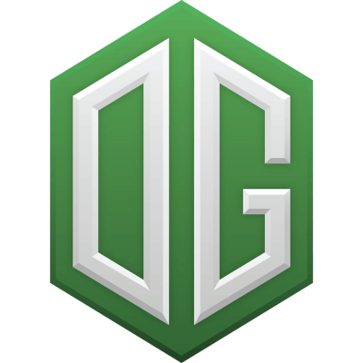
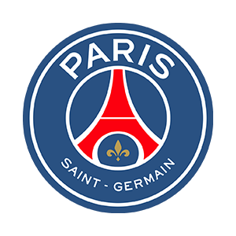

Історія Кіберспорту
Кіберспорт як стиль життя
Спортивні змагання з відеоігор. Історія електронного спорту почалася з гри Quake, яка мала режим мережевої гри через LAN або інтернет. Завдяки популярності гри Doom, в 1997 році в США з'явилася перша ліга електронного спорту — Cyberathlete Professional League (CPL)[1]. Відтоді з'явилося багато нових ліг із кіберспорту.Змагання з кіберспорту, зокрема міжнародні, проводяться по всьому світу.Великі змагання проводяться в спеціальних місцях, де публіка може спостерігати за гравцями, що сидять за комп'ютерами, а хід змагань можна відстежувати на великому екрані, де транслюється ігровий процес. Менш масштабні змагання відбуваються в комп'ютерних клубах. Крім того, змагання можуть проводитися через інтернет.Гра через інтернет має низку недоліків. У різних гравців можуть бути неоднакові затримки передачі інформації через глобальну мережу в зв'язку з її неоднорідністю. Під час гри через Інтернет складно виявити шахрайство гравців. Натомість, під час гри через локальну мережу всі гравці присутні в одному приміщенні під наглядом організаторів змагання, тому шахраювати набагато важче. Локальна мережа зводить нанівець і проблему затримок, оскільки має достатню й однакову для всіх пропускну здатність.На важливих змаганнях призовий фонд може сягати значних сум. Найбільший приз в історії кіберспортивних змагань виграла команда Team Liquid, яка перемогла у фіналі чемпіонату The International 2017 з дисципліни Dota 2, отримавши $10 824 322.На щорічному змаганні The International із гри Dota 2 в 2011 році перше місце здобула українська команда Natus Vincere, отримавши приз розміром у 1 000 000 доларів.
Остання значима гра
06.08.2018, м.Ванкувер стадіон "Роджер-Арена" OV vs PSG.LGD дисципліни DOTA 2
3:2
 